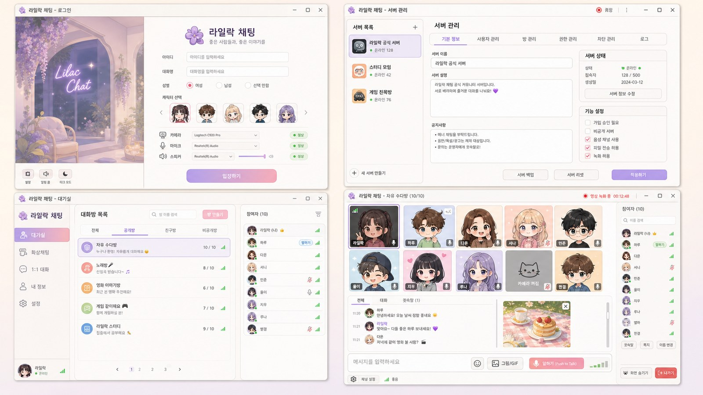
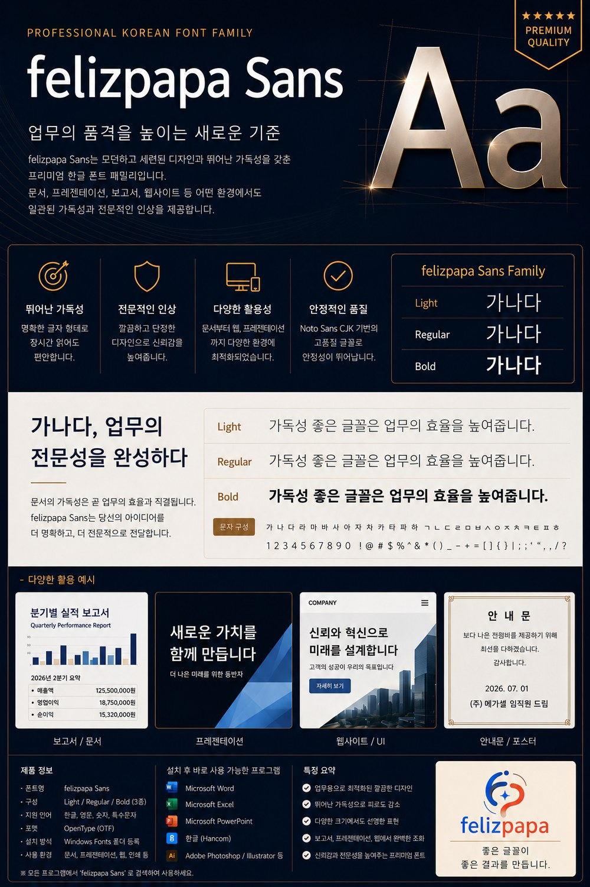

대표 프로젝트
Public Bid AI
나라장터 AI 분석 시스템
공고와 낙찰 데이터를 바탕으로 입찰 판단에 필요한 숫자를 정리하고, AI 추천과 통계 흐름을 함께 보여주는 분석 도구입니다.
- 공고 데이터 정리
- 낙찰률·사정률 분석
- AI 추천값 계산

About
낮에는 나라장터(국가종합전자조달)에서 입찰 업무를 하는 직장인이고, 저녁에는 Python과 AI로 업무 자동화를 연구하고 Unity로 게임을 만드는 취미 개발자입니다. 입찰은 여러 건의 낙찰 경험이 있고, 프로그래밍은 JAVA, C#, C++ 등으로 게임 앱을 만드는 초급 이상의 수준입니다.
이 홈페이지는 제가 일하며 배운 것, 만들며 즐긴 것들을 한 곳에 모아두는 작은 작업실입니다. 같은 길을 걷는 분들께 작은 도움이 되면 좋겠습니다.
Projects
공고와 낙찰 데이터를 바탕으로 입찰 판단에 필요한 숫자를 정리하고, AI 추천과 통계 흐름을 함께 보여주는 분석 도구입니다.
반복 조회와 엑셀 다운로드를 자동화해 여러 페이지의 자료를 빠르게 모으는 프로그램입니다.
여러 엑셀 파일을 하나로 합치고, 필요한 열만 정리해 업무용 자료로 바로 쓸 수 있게 만듭니다.
업무 데이터를 바탕으로 후보값을 비교하고, 사람이 판단하기 쉽게 추천 결과와 근거를 정리합니다.
나라장터 공공데이터를 가져오고, 첨부한 낙찰데이터를 AI로 분석해 입찰대장 엑셀까지 만드는 모바일 입찰 업무 앱입니다.
기본 이미지 27장과 갤러리 사진을 3×3부터 8×8까지의 반응형 슬라이딩 퍼즐로 즐기는 Android 앱입니다.
Lab Notes
기본 이미지 27장, 갤러리 사진 선택, 3×3~8×8 난이도, 4:3 퍼즐판 자동 맞춤 기능을 소개 페이지에 정리했습니다.
로그인·대기실·서버 관리·최대 10인 화상 채팅방을 갖춘 데스크톱 화상 채팅 프로그램을 JAVA로 완성했습니다. 캐릭터 선택, 채팅방 목록, 화면 녹화 표시 등 실사용 기능까지 구현했습니다.
추천 계산 흐름과 화면 구성을 개선하고, 실제 업무 입력값이 분석 결과에 반영되도록 정리했습니다.
조건 선택, 전체 페이지 반복, 엑셀 다운로드 저장까지 이어지는 자동화 흐름을 구축했습니다.
입찰 분석에서 여러 가능성을 비교할 수 있도록 통계 기반 시뮬레이션 기능을 연구했습니다.
Workshop
나라장터에서 입찰 업무를 하며 쌓은 경험을 정리하는 공간입니다. 여러 건의 낙찰을 받으며 몸으로 배운 것들, 처음 입찰하는 분들이 헷갈리기 쉬운 것들을 다룹니다. (특정 공고나 회사의 구체적인 정보는 다루지 않습니다.)
입찰참가자격등록, 공동인증서, 입찰자 본인확인 등 준비 서류와 등록 절차를 실무자 눈높이에서 정리했습니다.
글 읽기투찰가 산정의 기본 개념과 실무에서 주의할 점을 다룹니다.
글 읽기실제 경험에서 나온, 한 번의 실수로 입찰이 무효가 되는 사례들.
글 읽기Unity·C#으로 게임을, JAVA로 프로그램을 만드는 취미 개발자입니다. 퇴근 후 시간을 쪼개 하나씩 만들고 있습니다. 완성한 작품과 만드는 과정에서 배운 것들을 기록합니다.
로그인·대기실·서버 관리부터 최대 10인 화상 채팅방까지, JAVA로 직접 구현한 데스크톱 프로그램입니다.
늦게 시작한 프로그래밍, 그래도 즐거운 이유를 씁니다.
글 읽기
※ 엑셀 자동화 도구는 위의 '프로젝트'와 아래 '무료 다운로드'에서 소개합니다. 회사 자료가 들어간 파일은 데이터를 지우고 빈 양식만 공개합니다.
Downloads
처음 방문한 분도 바로 써볼 수 있는 작은 도구부터 공개합니다.

직접 제작한 한글 폰트 패밀리입니다. Light·Regular·Bold 3종, OpenType(OTF) 형식으로 한글·영문·숫자·특수문자를 지원합니다. 보고서, 프레젠테이션, 웹사이트 등 업무 환경 어디서나 무료로 사용할 수 있습니다.
Services
반복 클릭, 파일 정리, 데이터 수집, 보고서 생성 작업을 자동화합니다.
VBA, 수식, 병합, 서식, 대용량 처리까지 업무 파일을 사용하기 쉽게 만듭니다.
GPT와 Claude를 활용해 요약, 분류, 추천, 검토 흐름을 프로그램에 연결합니다.
나라장터, 낙찰률, 사정률, 통계 분석을 바탕으로 판단 자료를 정리합니다.
Blog
Contact
지금은 작은 자동화 도구부터 시작해도 좋습니다. 나중에는 프로그램 판매, 다운로드, 고객 지원, 교육 콘텐츠까지 자연스럽게 확장할 수 있습니다.